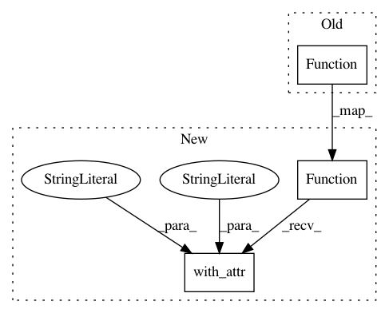

c94e6ba4b3b3cc117d898cb22883fb2a33d5c9a7,tests/python/relay/test_dataflow_pattern.py,,test_parition_batchnorm,#,804
Before Change
betaf = relay.var("betaf")
gammaf = relay.var("gammaf")
// Put the arguments in toplogological order for the reference
f = relay.Function([gammaf, xf, meanf, varf, betaf], get_BN(xf, varf, meanf, betaf, gammaf))
partitioned = BatchnormCallback().pattern.partition(BN)
assert tvm.ir.structural_equal(partitioned, f(gamma, x, mean, var, beta))
After Change
betaf = relay.var("betaf")
gammaf = relay.var("gammaf")
// Put the arguments in toplogological order for the reference
f = relay.Function([gammaf, xf, meanf, varf, betaf], get_BN(xf, varf, meanf, betaf, gammaf)).with_attr("PartitionedFromPattern","subtract_multiply_add_sqrt_divide_add_")
partitioned = BatchnormCallback().pattern.partition(BN)
assert tvm.ir.structural_equal(partitioned, f(gamma, x, mean, var, beta))
In pattern: SUPERPATTERN
Frequency: 3
Non-data size: 3
Instances
Project Name: apache/incubator-tvm
Commit Name: c94e6ba4b3b3cc117d898cb22883fb2a33d5c9a7
Time: 2020-05-20
Author: mbrookhart@octoml.ai
File Name: tests/python/relay/test_dataflow_pattern.py
Class Name:
Method Name: test_parition_batchnorm
Project Name: apache/incubator-tvm
Commit Name: c94e6ba4b3b3cc117d898cb22883fb2a33d5c9a7
Time: 2020-05-20
Author: mbrookhart@octoml.ai
File Name: tests/python/relay/test_dataflow_pattern.py
Class Name:
Method Name: test_parition_double_batchnorm
Project Name: apache/incubator-tvm
Commit Name: c94e6ba4b3b3cc117d898cb22883fb2a33d5c9a7
Time: 2020-05-20
Author: mbrookhart@octoml.ai
File Name: tests/python/relay/test_dataflow_pattern.py
Class Name:
Method Name: test_partition_dominator